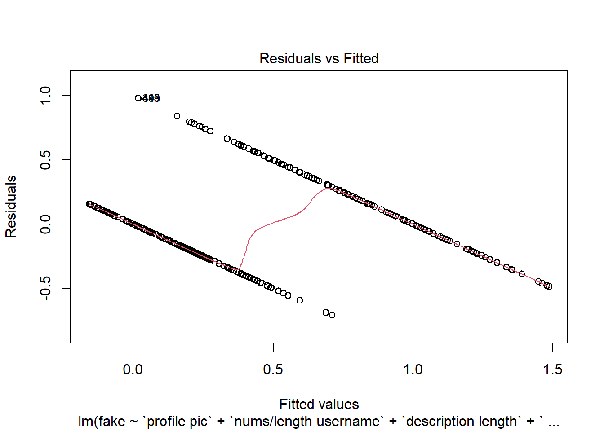
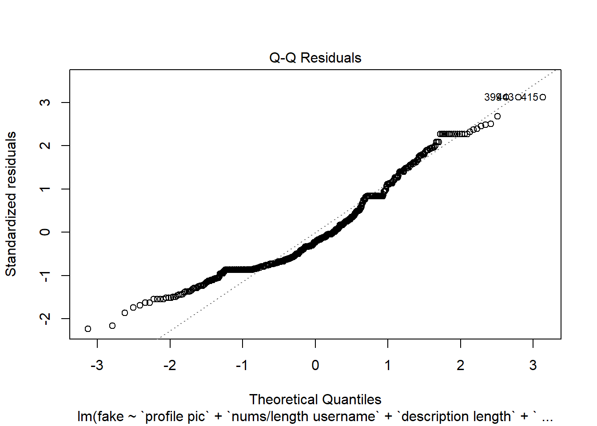
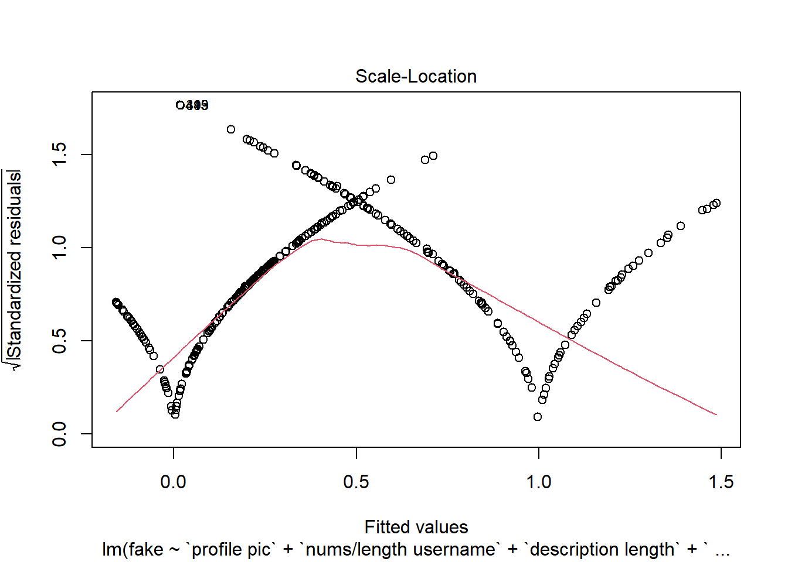
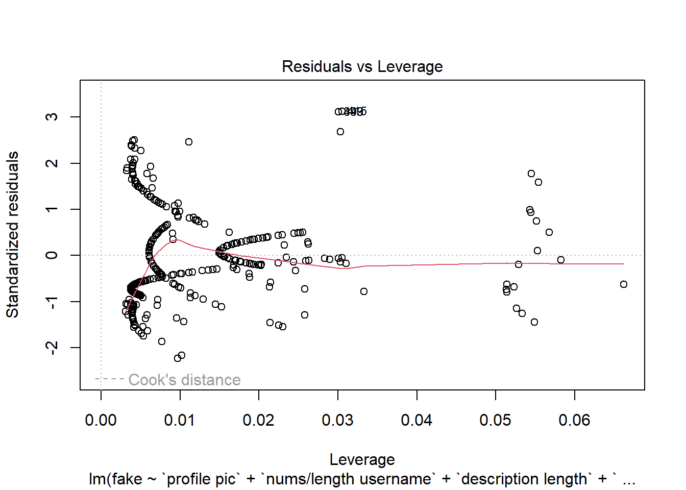
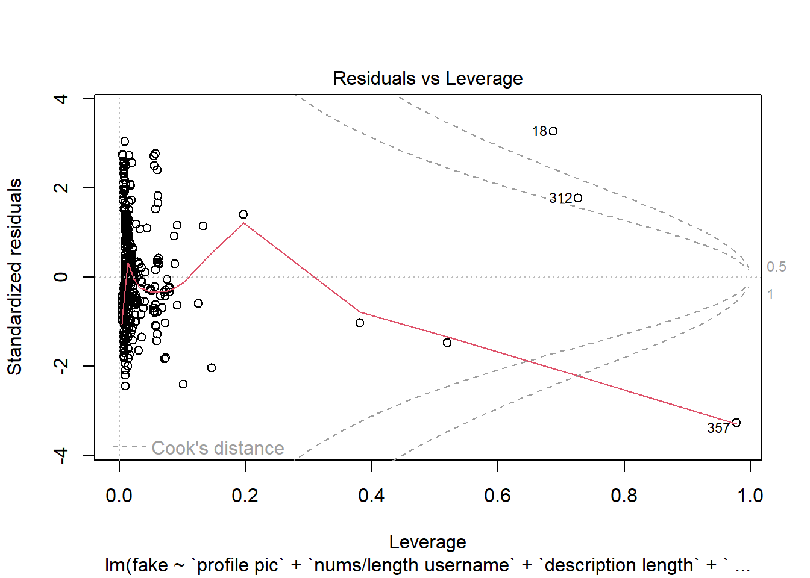

El objetivo principal de realizar un modelo de regresión es predecir el valor de la variable dependiente (en este caso si la cuenta es fake o no) basado en los valores de las variables independientes y comprender la fuerza y la forma de las relaciones entre ellas.
6.1 Importación de las librerías y Dataset
Primero, antes de comenzar con la realización de los modelos de regresión, importaremos todas las librerías necesarias para aplicar los diferentes datos, además de importar el Dataset train.csv.
library(tidyverse)
Warning: package 'lubridate' was built under R version 4.3.3
── Attaching core tidyverse packages ──────────────────────── tidyverse 2.0.0 ──
✔ dplyr 1.1.4 ✔ readr 2.1.5
✔ forcats 1.0.0 ✔ stringr 1.5.1
✔ ggplot2 3.5.0 ✔ tibble 3.2.1
✔ lubridate 1.9.3 ✔ tidyr 1.3.1
✔ purrr 1.0.2
── Conflicts ────────────────────────────────────────── tidyverse_conflicts() ──
✖ dplyr::filter() masks stats::filter()
✖ dplyr::lag() masks stats::lag()
ℹ Use the conflicted package (<http://conflicted.r-lib.org/>) to force all conflicts to become errors
library(readr) library(magrittr)
Attaching package: 'magrittr'
The following object is masked from 'package:purrr':
set_names
The following object is masked from 'package:tidyr':
extract
Como ya tenemos todo bien importado, comenzamos.
6.2 Modelado de Regresión
6.2.1 División de datos
Para trabajar correctamente con los datos, vamos a dividirlos en dos grupos, train y test.
train <-read_csv("train.csv")
Rows: 576 Columns: 12
── Column specification ────────────────────────────────────────────────────────
Delimiter: ","
dbl (12): profile pic, nums/length username, fullname words, nums/length ful...
ℹ Use `spec()` to retrieve the full column specification for this data.
ℹ Specify the column types or set `show_col_types = FALSE` to quiet this message.
test <-read_csv("test.csv")
Rows: 120 Columns: 12
── Column specification ────────────────────────────────────────────────────────
Delimiter: ","
dbl (12): profile pic, nums/length username, fullname words, nums/length ful...
ℹ Use `spec()` to retrieve the full column specification for this data.
ℹ Specify the column types or set `show_col_types = FALSE` to quiet this message.
Con el dataset train es con el que realizaremos nuestro modelo, mientras que con el dataset test es con el que realizaremos las pruebas y predicciones.
6.2.2 Ajuste del modelo de regresión y evaluación
Una vez dividido los datos, procederemos a ajustar un modelo de regresión con los datos de train. Al investigar las cuentas fake de Instagram, la variable dependiente de nuestro modelo será el atributo fake. Primero relacionaremos esa variable con todas las demás, para ver cuáles son significativas.
attach(train)modelo1 <-lm(fake ~ ., data = train)summary(modelo1)
Al ser el p-value bastante bajo, podemos decir que tenemos modelo.
El error estándar residual es relativamente bajo, por lo que nos puede dar un indicio de que las predicciones pueden ser buenas.
En este caso al ser un contexto social y tener una variablilidad alta, es un buen valor por lo que el error se ajusta parcialmente a los datos.
Al ser el R2 ajustado cercano al estadístico anterior, sugiere que el modelo no está sobreajustado y que la mayoría de las variables incluidas son relevamtes.
Sin embargo, tenemos bastantes variables no significativas, lo que significa que si se eliminan, el modelo apenas no cambia. Para comprobarlo, vamos a hacer un segundo modelo, sin las variables no significativas, solo quedándonos con las muy significativas y las significativas.
Como podemos observar, efectivamente este modelo es prácticamente igual que el anterior, aún elimando variables independientes.
6.2.3 Validación del modelo
Ahora lo que haremos será evaluar el segundo modelo obtenido.
6.2.3.1 Visualización
Para la validación del modelo, primero vamos a dibujarlo y analizarlo.
plot(modelo2)




Tras ver la primera gráfica, podemos saber que los residuos no se esparcen aleatoriamente, si no que siguen un patrón que es fácilmente visible. Esto nos indica que el modelo de regresión lineal actual no es adecuado para los datos. Por lo tanto es importante reconsiderar la especificación del modelo, adoptando métodos de modelado alternativos para capturar mejor la relación entre los datos.
La última gráfica nos enseña los puntos que tienen más influencia en el modelo. Como podemos ver, algunos puntos de datos están influyendo desproporcionadamente en el modelo de regresión. Una buena solución es eliminar esos datos de nuestro dataset , volver a realizar el modelo y repetir este proceso. Además, se puede observar que los residuos están agrupados formando un patrón, posiblemente causado por la violación de supuestos del modelo.
6.2.3.2 Evaluación en el conjunto de prueba
Ahora, usando el modelo entrenado, vamos a predecir los valores en el conjunto de prueba, a ver que estadísticos obtenemos y así podemos comprobar si nuestro modelo tiene un buen rendimiento con respecto al conjunto de prueba.
El mse mide el promedio de los cuadrados de los errores o desviaciones, es decir, la diferencia entre los valores observados y los predichos.
En este caso hemos obtenido un mse de 0.10. Sin embargo, este valor es demasiado alto, ya que el atributo fake toma valores entre 0 y 1, por lo que nos está indicando que no se ajusta relativamente bien al modelo
MAE (Error absoluto medio)
EL mae mide el promedio de los errores absolutos entre los valores observados y los predichos. Es más robusto a outliers en comparación con el mse.
En nuestro caso hemos obtenido un mae de 0.10, el cuál es el mismo que el mse, por lo que ocurre lo mismo
R2
Indica la proporción de la varianza en la variable dependiente que es predecible a partir de las variables independientes. Un R2 cercano a 1 indica un buen ajuste del modelo.
En este caso el R2 es bastante escaso, un 0.56. Lo que nos vuelve a indicar un mal ajuste a los datos del modelo.
6.2.4 Mejora del modelo
Al obtener unos resultados bastantes mediocres en la validación del modelo, vamos a mejorarlo añadiendo variables polinómicas. Iremos probando algunas hasta encontrar la combinación óptima que mejore nuestro modelo al completo.
6.2.4.1 Ingeniería de Características
Para intentar mejorar aun más el modelo, con los datos y variables que disponemos, vamos a intentar sacar nuevas variables operando con las existentes. Por ejemplo, vamos a ver si añadiendo una característica que sea followers/follows podemos mejorar el modelo.
Tal y como hemos estudiando anteriormente, una variable clave para detectar si una cuenta es falsa o no es el numero de palabras que tiene el nombre, así que vamos a añadirle a nuestro modelo esa variable polinómica a ver que ocurre.
Tras unos intentos, he llegado a la conclusión que este modelo no se puede mejorar más. Una de las causas es porque, de las variables significativas, si su valor es o 0 o 1, no tiene sentido elevarlo a algún numero, ya que se va a mantener igual. Otra de las causas es que del resto de variables numericas con mayor rango de números, si esas variables no son significativas en nuestro modelo, difícilmente lo serán en nuestro modelo polinómico.
Por tanto, hemos conseguido mejorar nuestro modelo a un error estándar de residuos de 0.29 y a un R2 de 0.6715, 0.08 más que el anterior.
Warning in sqrt(crit * p * (1 - hh)/hh): Se han producido NaNs
Warning in sqrt(crit * p * (1 - hh)/hh): Se han producido NaNs

Como podemos observar, al final nos hemos quedado con 10 variables, de las cuales dos de ellas son polinómicas.
Dicho anteriormente, aunque hemos ligeramente mejorado nuestro modelo, no podemos considerarlo como un buen modelo debido a que su R2 sigue siendo aún muy bajo. Además los residuos siguen siguiendo un patrón, no son aleatorios, por lo que en esa parte tampoco hemos mejorado.